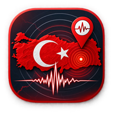

Gizlilik Politikası
Zelzele — Türkiye Deprem Haritası · Son güncelleme: 9 Ekim 2026
Zelzele'de hesap, reklam, analitik ve takip yoktur. Uygulamayı kullanmak için hiçbir kişisel bilgi vermeniz gerekmez. Sunucuya bilgi yalnızca arka plan bildirimini açarsanız gider; o da bildirimi gönderebilmek için gereken kadardır ve bildirimi kapattığınızda silinir.
Cihazınızda kalan bilgiler
Şunlar yalnızca telefonunuzun ya da tarayıcınızın kendi deposunda tutulur ve bildirim kapalıyken hiçbir yere gönderilmez:
- Konumunuz (izin verdiyseniz) — depremlerin size uzaklığını hesaplamak için
- Takip ettiğiniz şehirler, filtreler, tema ve uyarı ayarlarınız
- Rastgele üretilmiş bir cihaz kimliği (adınız, telefon numaranız ya da reklam kimliğinizle hiçbir bağı yoktur)
Uzaklık hesabı telefonun içinde yapılır. Uygulamayı kaldırdığınızda bu bilgiler cihazınızdan silinir.
Arka plan bildirimi açıksa sunucuda tutulanlar
Uygulama kapalıyken deprem bildirimi alabilmeniz için cihazınız bildirim sunucusuna kaydedilir. Sunucu yalnızca şunları saklar:
| Bilgi | Neden |
|---|---|
| Bildirim adresi — tarayıcıda Web Push aboneliği, iPhone uygulamasında Apple'ın verdiği cihaz jetonu | Bildirimi cihazınıza ulaştırmak |
| Rastgele cihaz kimliği | Ayarlarınızı yalnızca sizin cihazınızın değiştirebilmesi |
| Bildirim kurallarınız: büyüklük eşiği, yarıçap, takip ettiğiniz şehirler | Hangi depremin size bildirileceğine karar vermek |
| Yaklaşık konum (yaklaşık 1 km'ye yuvarlanmış; yalnızca konum izni verdiyseniz) | "Yakınımdaki depremler" kuralı ve bildirimdeki uzaklık |
| Hangi depremin cihazınıza gönderildiği | Aynı bildirimin tekrar gitmemesi; 30 gün sonra silinir |
Bu bilgiler bir kişiye bağlanmaz; ad, e-posta veya telefon numarası istenmez. Arka plan bildirimini kapattığınızda kaydınız sunucudan hemen silinir. Uygulamayı kaldırdığınızda ya da bildirim iznini geri aldığınızda kayıt, bir sonraki gönderim denemesinde bildirim servisinin "artık geçersiz" yanıtıyla kendiliğinden silinir. Bilgiler satılmaz, paylaşılmaz, reklam veya profil oluşturmak için kullanılmaz.
Dışarıya bağlanılan servisler
- Supabase — deprem verisinin canlı akışı ve bildirim sunucusu (yukarıdaki kayıt burada durur).
- Apple Anında Bildirim Servisi (APNs) ve tarayıcınızın push servisi (Google, Mozilla, Apple) — bildirimi cihaza taşır.
- GitHub Pages — uygulamanın kendisi ve son 30 günün deprem verisi.
- CARTO / OpenStreetMap — harita görüntüleri; unpkg.com — harita kütüphanesi.
Deprem verisini AFAD ve Kandilli Rasathanesi'nden sunucumuz okur; cihazınız bu kurumlara bağlanmaz. Bu servisler, internetteki her istekte olduğu gibi IP adresinizi görür ve kendi gizlilik politikalarına tabidir; onlara bizim tarafımızdan ek bir bilgi gönderilmez.
İzinler
- Konum — isteğe bağlı. Vermezseniz uzaklık ve "yakınımdaki depremler" dışında her şey çalışır; şehir takibiyle bildirim almaya devam edebilirsiniz.
- Bildirim — isteğe bağlı. Yalnızca arka plan bildirimini açtığınızda istenir.
Çocuklar
Zelzele hiçbir yaş grubundan bilerek kişisel veri toplamaz.
Değişiklikler
Bu politika değişirse bu sayfa güncellenir ve yukarıdaki tarih değiştirilir.
İletişim
Soru ve talepleriniz için (sunucudaki kaydınızın silinmesi dahil): saimkamil@gmail.com